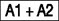
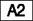

| Gemeinde: | (Bitte Zutreffendes ankreuzen:) | ||||
| Kreis: | □ Allgemeiner Wahlbezirk □ Sonderwahlbezirk □ Wahlbezirk mit beweglichem Wahlvorstand | ||||
| Land: | |||||
| Wahlbezirk-Nr.: (Name oder Nummer) | |||||
| Diese Wahlniederschrift ist vollständig auszufüllen und bei Punkt 5.6 von allen Mitgliedern des Wahlvorstandes zu unterschreiben. | |||||
| Familienname | Vornamen | Funktion | |
|---|---|---|---|
| 1. | als Wahlvorsteher | ||
| 2. | als stellv. Wahlvorsteher | ||
| 3. | als Schriftführer | ||
| 4. | als Beisitzer | ||
| 5. | als Beisitzer | ||
| 6. | als Beisitzer | ||
| 7. | als Beisitzer | ||
| 8. | als Beisitzer | ||
| 9. | als Beisitzer | ||
| Familienname | Vornamen | Uhrzeit | |
|---|---|---|---|
| 1. | |||
| 2. | |||
| 3. | |||
| Familienname | Vornamen | Aufgabe | |
|---|---|---|---|
| 1. | |||
| 2. | |||
| 3. | |||
| 2. | Wahlhandlung | |||||||
| 2.1 | Eröffnung der Wahlhandlung | |||||||
| Der Wahlvorsteher eröffnete die Wahlhandlung damit, dass er die anwesenden Mitglieder des Wahlvorstandes auf ihre Verpflichtung zur unparteiischen Wahrnehmung ihres Amtes und zur Verschwiegenheit über die ihnen bei ihrer amtlichen Tätigkeit bekannt gewordenen Angelegenheiten hinwies; er stellte die Erteilung dieses Hinweises an alle Beisitzer vor Aufnahme ihrer Tätigkeit sicher. Er belehrte sie über ihre Aufgaben. | ||||||||
| Abdrucke des Europawahlgesetzes, des Bundeswahlgesetzes und der Europawahlordnung lagen im Wahlraum vor. | ||||||||
| 2.2 | Vorbereitung des Wahlraums | |||||||
| Damit die Wähler die Stimmzettel unbeobachtet kennzeichnen konnten, waren im Wahlraum Wahlkabinen oder Tische mit Sichtblenden oder Nebenräume, die nur vom Wahlraum aus betretbar waren, hergerichtet: | ||||||||
| (Bitte eintragen:) | ||||||||
| Zahl der Wahlkabinen oder Tische mit Sichtblenden: | ||||||||
| . . . . . . . . . . . . . . . . . . . . . . . . . . . . . . . . . . . . . . . . . . . . . . . . . | ||||||||
| Zahl der Nebenräume: | ||||||||
| . . . . . . . . . . . . . . . . . . . . . . . . . . | ||||||||
| Vom Tisch des Wahlvorstandes konnten die Wahlkabinen oder Tische mit Sichtblenden oder Eingänge zu den Nebenräumen überblickt werden. | ||||||||
| 2.3 | Vorbereitung der Wahlurne | |||||||
| Der Wahlvorstand stellte fest, dass sich die Wahlurne in ordnungsgemäßem Zustand befand und leer war. Sodann wurde die Wahlurne | (Bitte Zutreffendes ankreuzen:) | |||||||
| □ | versiegelt. | |||||||
| □ | verschlossen; der Wahlvorsteher nahm den Schlüssel in Verwahrung. | |||||||
| 2.4 | Beginn der Stimmabgabe | |||||||
| Mit der Stimmabgabe wurde um |
| |||||||
| 2.5 | Berichtigungen aufgrund nachträglich ausgestellter Wahlscheine | |||||||
| Vor Beginn der Stimmabgabe: | (Bitte Zutreffendes ankreuzen:) | |||||||
| □ | Ein Verzeichnis über nachträglich ausgestellte Wahlscheine lag nicht vor. Das Wählerverzeichnis war nicht zu berichtigen. | |||||||
| □ | Vor Beginn der Stimmabgabe berichtigte der Wahlvorsteher das Wählerverzeichnis nach dem Verzeichnis der nachträglich erteilten Wahlscheine, indem er bei den Namen der nachträglich mit Wahlscheinen versehenen Wahlberechtigten in der Spalte für die Stimmabgabe den Vermerk „Wahlschein“ oder den Buchstaben „W“ eintrug. Der Wahlvorsteher berichtigte auch die Zahlen der Abschlussbescheinigung der Gemeindebehörde; diese Berichtigung wurde von ihm abgezeichnet. | |||||||
| Während der Stimmabgabe: | □ | Der Wahlvorsteher berichtigte das Wählerverzeichnis später aufgrund der durch die Gemeindebehörde am Wahltag erfolgten Mitteilungen über die noch am Wahltag an erkrankte Wahlberechtigte erteilten Wahlscheine, indem er bei den Namen der noch am Wahltag mit Wahlscheinen versehenen Wahlberechtigten in der Spalte für die Stimmabgabe den Vermerk „Wahlschein“ oder den Buchstaben „W“ eintrug. Der Wahlvorsteher berichtigte auch die Zahlen der Abschlussbescheinigung der Gemeindebehörde; diese Berichtigung wurde von ihm abgezeichnet. | ||||
| 2.6 | Ungültigkeit von Wahlscheinen | (Bitte Zutreffendes ankreuzen:) | ||||
| □ | Der Wahlvorsteher hat eine Mitteilung über die Ungültigkeit von Wahlscheinen nicht erhalten. | |||||
| □ | Der Wahlvorsteher wurde vom | |||||
| . . . . . . . . . . . . . . . . . . . . . . . . . . . . . . . . . . . . . . . . . . . . . | ||||||
| unterrichtet, dass folgende(r) Wahlschein(e) für ungültig erklärt worden ist/sind: | ||||||
| . . . . . . . . . . . . . . . . . . . . . . . . . . . . . . . . . . . . . . . . . . . . . (Bitte Vor- und Familienname des Wahlschein- inhabers sowie Wahlschein-Nummer eintragen) | ||||||
| 2.7 | Beweglicher Wahlvorstand | |||||
| Im Wahlbezirk | (Bitte Zutreffendes ankreuzen:) | |||||
| □ | war kein beweglicher Wahlvorstand tätig. (weiter bei Punkt 2.8) | |||||
| □ | war ein beweglicher Wahlvorstand tätig. (Bitte Zutreffendes ankreuzen:) Im Wahlbezirk befindet sich | |||||
| □ | das kleinere Krankenhaus/Alten- oder Pflegeheim | |||||
| . . . . . . . . . . . . . . . . . . . . . . . . . . . . . . . . . . . . . . . . . . . . . , (Bezeichnung) | ||||||
| □ | das Kloster | |||||
| . . . . . . . . . . . . . . . . . . . . . . . . . . . . . . . . . . . . . . . . . . . . . , (Bezeichnung) | ||||||
| □ | die sozialtherapeutische Anstalt | |||||
| . . . . . . . . . . . . . . . . . . . . . . . . . . . . . . . . . . . . . . . . . . . . . , (Bezeichnung) | ||||||
| □ | die Justizvollzugsanstalt | |||||
| . . . . . . . . . . . . . . . . . . . . . . . . . . . . . . . . . . . . . . . . . . . . . , (Bezeichnung) | ||||||
| für das/die die Gemeinde die Stimmabgabe vor einem beweglichen Wahlvorstand zugelassen hat. | ||||||
| Die personelle Zusammensetzung des beweglichen Wahlvorstandes/der beweglichen Wahlvorstände für die einzelne(n) Anstalt(en) (drei Mitglieder des Wahlvorstandes einschließlich des Wahlvorstehers oder seines Stellvertreters) ist aus den dieser Niederschrift als | ||||||
| Anlagen Nr. . . . . . . . . . . . . . . . bis . . . . . . . . . . . . . . . beigefügten besonderen Niederschriften ersichtlich. | ||||||
| Der bewegliche Wahlvorstand begab sich zu der von der Gemeindebehörde bestimmten Wahlzeit in die Einrichtung(en) und übergab dort den Wahlberechtigten die Stimmzettel. Er wies die Wahlberechtigten, die sich bei der Stimmabgabe der Hilfe einer anderen Person bedienen wollten, darauf hin, dass sie auch ein von ihnen bestimmtes Mitglied des Wahlvorstandes als Hilfsperson in Anspruch nehmen können. Die Wähler hatten die Möglichkeit, den Stimmzettel unbeobachtet zu kennzeichnen. | ||||||||
| Nach Prüfung der Wahlscheine warfen die Wähler ihre gefalteten Stimmzettel in die vom beweglichen Wahlvorstand mitgebrachte verschlossene Wahlurne. Soweit ein Wähler es wünschte, warf der Wahlvorsteher oder sein Stellvertreter den gefalteten Stimmzettel in die Wahlurne. Der bewegliche Wahlvorstand vereinnahmte die Wahlscheine und brachte nach Schluss der Stimmabgabe die verschlossene Wahlurne und die eingenommenen Wahlscheine unverzüglich in den Wahlraum zurück. Hier verblieb die verschlossene Wahlurne bis zum Schluss der Wahlhandlung unter ständiger Aufsicht des Wahlvorstandes. | ||||||||
| 2.8 | Beweglicher Wahlvorstand im Sonderwahlbezirk | |||||||
| Im Sonderwahlbezirk | (Bitte Zutreffendes ankreuzen:) | |||||||
| □ | war kein beweglicher Wahlvorstand tätig. | |||||||
| □ | begab sich ein beweglicher Wahlvorstand in die Krankenzimmer und verfuhr wie unter 2.7 beschrieben. | |||||||
| 2.9 | Besondere Vorfälle während der Wahlhandlung | (Bitte Zutreffendes ankreuzen:) | ||||||
| □ | waren nicht zu verzeichnen. | |||||||
| □ | waren zu verzeichnen. Über die besonderen Vorfälle (z. B. Zurückweisung von Wählern in den Fällen des § 49 Absatz 6 und 7 und des § 52 der Europawahlordnung, Unterbrechung der Wahlhandlung) wurden Niederschriften angefertigt, die als Anlagen | |||||||
| ||||||||
| 2.10 | Ablauf der Wahlzeit | |||||||
| Um 18.00 Uhr gab der Wahlvorsteher den Ablauf der Wahlzeit bekannt. Danach wurden nur noch die Wähler zur Stimmabgabe zugelassen, die vor Ablauf der Wahlzeit erschienen waren und sich im Wahlraum oder aus Platzgründen davor befanden. Nach Ablauf der Wahlzeit eintreffenden Personen wurde der Zutritt zur Stimmgabe gesperrt. Nachdem die vor Ablauf der Wahlzeit erschienenen Wähler ihre Stimme abgegeben hatten, erklärte der Wahlvorsteher die Wahlhandlung für geschlossen. | ||||||||
| ||||||||
| erklärte der Wahlvorsteher die Wahl für geschlossen. | ||||||||
| Vom Wahltisch wurden alle nicht benutzten Stimmzettel entfernt. | ||||||||
| 3. | Ermittlung und Feststellung des Wahlergebnisses im Wahlbezirk | |||||
| 3.1 | Leitung der Ergebnisfeststellung | |||||
| Die Ermittlung und Feststellung des Wahlergebnisses wurden unmittelbar im Anschluss an die Stimmabgabe und ohne Unterbrechung unter der Leitung des Wahlvorstehers/des stellvertretenden Wahlvorstehers vorgenommen. | ||||||
| 3.2 | Zahl der Wähler, Öffnung der Wahlurne | |||||
| a) Zunächst wurden die im Wählerverzeichnis eingetragenen Stimmabgabevermerke gezählt. | ||||||
| Die Zählung ergab | (Bitte Zahl eintragen:) | |||||
| ………… Stimmabgabevermerke | ||||||
| b) Dann wurden die eingenommenen Wahlscheine gezählt. | ||||||
| Die Zählung ergab | ………… Wahlscheine (= Wähler mit Wahlschein) | |||||
| Diese Zahl hinten in Abschnitt 4 bei eintragen. | ||||||
| c) Die Feststellung der Zahl der Stimmabgabevermerke im Wählerverzeichnis und der eingenommenen Wahlscheine ergab, dass | □ | mindestens 30 Wähler ihre Stimme abgegeben haben (weiter bei Punkt 3.2. e)). | ||||
| □ | weniger als 30 Wähler ihre Stimme abgegeben haben, der Kreis- oder Stadtwahlleiter wurde unterrichtet (weiter bei Punkt 3.2. d)). | |||||
| d) Weil weniger als 30 Wähler ihre Stimme abgegeben haben, hat der Kreis- oder Stadtwahlleiter nach § 61 Absatz 2 der Europawahlordnung die gemeinsame Ermittlung und Feststellung des Wahlergebnisses mit einem von ihm bestimmten anderen Wahlvorstand | um ……… Uhr ……… Minuten angeordnet. | |||||
| Der Wahlvorstand des Wahlbezirks mit weniger als 30 Wähler (abgebender Wahlvorstand) | . . . . . . . . . . . . . . . . . . . . . . . . . . . . . . . . . . . . . . . . . . . . . . . . . . (abgebender Wahlvorstand/ Name oder Nummer des Wahlbezirks) | |||||
| hat die verschlossene Wahlurne | ||||||
| oder | ||||||
| die aus der Wahlurne entnommenen, ungesichteten und in einem separaten Umschlag verschlossenen und versiegelten Stimmzettel | ||||||
| zusammen mit der Abschlussbeurkundung, dem Wählerverzeichnis und den eingenommenen Wahlscheinen dem vom Kreis- oder Stadtwahlleiter bestimmten Wahlvorstand (aufnehmender Wahlvorstand) übergeben. | . . . . . . . . . . . . . . . . . . . . . . . . . . . . . . . . . . . . . . . . . . . . . . . . . . (aufnehmender Wahlvorstand/ Name oder Nummer des Wahlbezirks) | |||||
| (Zutreffendes bitte ankreuzen:) | ||||||
| Die Übergabe | ||||||
| □ | der verschlossenen Wahlurne | |||||
| □ | des versiegelten Umschlages mit den Stimmzetteln | |||||
| erfolgte um ……… Uhr ……… Minuten. | ||||||
| Am Wahlraum des abgebenden Wahlvorstands wurde ein Hinweis angebracht, wo die gemeinsame Ermittlung und Feststellung des Wahlergebnisses erfolgt. Bei Transport der zu übergebenden Gegenstände waren der Wahlvorsteher und der Schriftführer, ein weiteres Mitglied des Wahlvorstands und soweit möglich weitere im Wahlraum anwesende Wahlberechtigte als Vertretende der Öffentlichkeit anwesend. | □ | Bitte durch Ankreuzen bestätigen.(weiter bei Punkt 5.4) | ||||
| e) Sodann wurde die Wahlurne geöffnet; die eingenommenen Stimmzettel wurden entnommen. Der Wahlvorsteher überzeugte sich, dass die Wahlurne leer war. | ||||||
| f) Der Inhalt der Wahlurne wurde vor dem Auszählen mit dem Inhalt einer anderen Wahlurne vermischt, weil | (Soweit zutreffend, ankreuzen, sonst weiter bei Punkt 3.2.g)). | |||||
| □ | im Wahlbezirk/Sonderwahlbezirk ein beweglicher Wahlvorstand tätig war. | |||||
| □ | aufgrund der Anordnung des Kreis- oder Stadtwahlleiters von ………… Uhr ………… Minuten die in der verschlossenen Wahlurne oder in einem verschlossenen Umschlag transportierten Stimmzettel, das Wählerverzeichnis, die Abschlussbeurkundung und die eingenommenen Wahlscheine des | |||||
. . . . . . . . . . . . . . . . . . . . . . . . . . . . . . . . . . . . . . . . . . . . . . . . . . (abgebender Wahlvorstand/ Name oder Nummer des Wahlbezirks) | ||||||
| um ………… Uhr ………… Minuten zur gemeinsamen Ermittlung und Feststellung des Wahlergebnisses übernommen wurden. | ||||||
| Bei der Zahl der Wähler (3.2.a), b) und g)) und der Zahl der Wahlberechtigten (3.3) sind die Zahlen aus den Wählerverzeichnissen, Abschlussbeurkundungen, eingenommenen Wahlscheinen und Stimmzetteln des abgebenden und des aufnehmenden Wahlvorstands zusammenzuzählen. | ||||||
| Nach der Vermischung sind die Stimmzettel gemeinsam auszuzählen (ab 3.2.g)). | ||||||
| g) Sodann wurden die Stimmzettel gezählt. | (Bitte Zahl eintragen:) | |||||
| Die Zählung ergab | …………… Stimmzettel (= Wähler insgesamt) | |||||
| Diese Zahl hinten in Abschnitt 4 bei eintragen. | ||||||
| Die Zahl a) + b) ergab | …………… Personen. | |||||
| (Bitte Zutreffendes ankreuzen:) | ||||||
| □ | Die Gesamtzahl a) + b) stimmte mit der Zahl der Stimmzettel unter g) überein. | |||||
| □ | Die Gesamtzahl a) + b) war | |||||
| um …………… (Anzahl) größer | ||||||
| um …………… (Anzahl) kleiner | ||||||
| als die Zahl der Stimmzettel. | ||||||
| Die Verschiedenheit, die auch bei wiederholter Zählung bestehen blieb, erklärt sich aus folgenden Gründen: | ||||||
| (Bitte erläutern:) | ||||||
| . . . . . . . . . . . . . . . . . . . . . . . . . . . . . . . . . . . . . . . . . . . . . . . . . . . . . . . . . . . . . . . . . . . . . . . . . . . . . . . . . . . . . . . . . . . . . . . . . . . . . . . . . . . . . . . . . . . . . . . . . . . . . . . . . . . . . . . . . . . . . . . . . . . . . . . . . . . . . . . . . . . . . . . . . . . . . . . . . . . . | ||||||
| 3.3 | Zahl der Wahlberechtigten | |||||
| Der Schriftführer übertrug aus der Bescheinigung über den Abschluss des Wählerverzeichnisses | die Zahl der Wahlberechtigten hinten in Abschnitt 4 unter | |||||
|  der Wahlniederschrift. | ||||||
| Sofern der Wahlvorsteher Berichtigungen aufgrund nachträglich ausgestellter Wahlscheine vorgenommen hat (siehe Abschnitt 2.5), ist die berichtigte Zahl einzutragen. | ||||||
| 3.4 | Zählung der Stimmen; Stimmzettelstapel | |||||
| Nunmehr bildeten mehrere Beisitzer unter Aufsicht des Wahlvorstehers folgende Stimmzettelstapel und behielten sie unter Aufsicht: | ||||||
| 3.4.1 |
| |||||
| Der Stapel zu c) wurde ausgesondert und von einem vom Wahlvorsteher dazu bestimmten Beisitzer in Verwahrung genommen. | ||||||
| 3.4.2 | Die Beisitzer, die die nach Wahlvorschlägen geordneten Stapel zu a) unter ihrer Aufsicht hatten, übergaben die einzelnen Stapel zu a) in der Reihenfolge der Wahlvorschläge auf dem Stimmzettel nacheinander zu einem Teil dem Wahlvorsteher, zum anderen Teil seinem Stellvertreter. Diese prüften, ob die Kennzeichnung der Stimmzettel eines jeden Stapels gleich lautete und sagten zu jedem Stapel laut an, für welchen Wahlvorschlag er Stimmen enthielt. Gab ein Stimmzettel dem Wahlvorsteher oder seinem Stellvertreter Anlass zu Bedenken, so fügten sie den Stimmzettel dem Stapel zu c) bei. | |||||
| Nunmehr prüfte der Wahlvorsteher den Stapel zu b) mit den ungekennzeichneten Stimmzetteln, die ihm hierzu von dem Beisitzer, der sie in Verwahrung hatte, übergeben wurden. Der Wahlvorsteher sagte jeweils an, dass die Stimme ungültig ist. | ||||||
| Danach zählten je zwei vom Wahlvorsteher bestimmte Beisitzer nacheinander je einen der zu a) und b) gebildeten Stapel unter gegenseitiger Kontrolle durch und ermittelten | (Zwischensummenbildung I) | |||||
| die Zahl der für die einzelnen Wahlvorschläge | = Zeilen D1, D2, D3, D4 usw. in Abschnitt 4 | |||||
| abgegebenen Stimmen sowie | ||||||
| die Zahl der ungültigen Stimmen. | = Zeile C in Abschnitt 4 | |||||
| Die so ermittelten Stimmenzahlen wurden als Zwischensummen I (ZS I) vom Schriftführer hinten in Abschnitt 4 in den genannten Zeilen eingetragen. | □ | Nach Eintragung durch Ankreuzen bestätigen. | ||||
| 3.4.3 | Die Zählungen nach 3.4.2 verliefen wie folgt: | (Bitte Zutreffendes ankreuzen:) | ||||
| □ | Unstimmigkeiten bei den Zählungen haben sich nicht ergeben. | |||||
| □ | Da sich zahlenmäßige Abweichungen ergaben, zählten die beiden Beisitzer den betreffenden Stapel nacheinander erneut. | |||||
| Danach ergab sich eine Übereinstimmung zwischen den Zählungen. | □ | Bitte durch Ankreuzen bestätigen. | ||||
| 3.4.4 | Zum Schluss entschied der Wahlvorstand über die Gültigkeit der Stimmen, die auf den übrigen in dem Stapel zu c) ausgesonderten Stimmzetteln abgegeben worden waren. Der Wahlvorsteher gab die Entscheidung mündlich bekannt und sagte jeweils bei gültigen Stimmen an, für welchen Wahlvorschlag die Stimme abgegeben worden war. Er vermerkte auf der Rückseite jedes Stimmzettels, ob und für welchen Wahlvorschlag die Stimme für gültig oder ungültig erklärt worden war, und versah die Stimmzettel mit fortlaufenden Nummern. | (Zwischensummenbildung II) | ||||
| Die so ermittelten gültigen oder ungültigen Stimmen wurden als Zwischensummen II (ZS II) vom Schriftführer hinten in Abschnitt 4 eingetragen. | □ | Nach Eintragung durch Ankreuzen bestätigen. | ||||
| 3.4.5 | Der Schriftführer zählte die Zwischensummen der ungültigen Stimmen sowie der gültigen Stimmen jeweils für die einzelnen Wahlvorschläge zusammen. Zwei vom Wahlvorsteher bestimmte Beisitzer überprüften die Zusammenzählung. | |||||
| 3.5 | Sammlung und Beaufsichtigung der Stimmzettel | |||||
Die vom Wahlvorsteher bestimmten Beisitzer sammelten
| ||||||
| |||||||
| je für sich und behielten sie unter ihrer Aufsicht. | |||||||
| Die in c) bezeichneten Stimmzettel sind als Anlagen unter den fortlaufenden Nummern | |||||||
| . . . . . . . . . . . . . . . . bis . . . . . . . . . . . . . . . . | beigefügt. | ||||||
| 3.6 | Feststellung und Bekanntgabe des Wahlergebnisses | ||||||
| Das im nachstehenden Abschnitt 4 der Wahlniederschrift enthaltene Ergebnis wurde vom Wahlvorstand als das Wahlergebnis im Wahlbezirk festgestellt und vom Wahlvorsteher mündlich bekannt gegeben. | □ | Bitte durch Ankreuzen bestätigen. | |||||
| 4. | Wahlergebnis | ||||||
Kennbuchstaben für die Zahlenangaben | (Wahlniederschrift und Vordruck für die Schnellmeldung sind aufeinander abgestimmt. Die einzelnen Zahlen des Wahlergebnisses sind in die Schnellmeldung (siehe Punkt 5.3) bei demselben Kennbuchstaben einzutragen, mit dem sie in der Wahlniederschrift bezeichnet sind.) | ||||||
| Wahlberechtigte laut Wählerverzeichnis ohne Sperrvermerk „W“ (Wahlschein)1) | . . . . . . . . . . . . . . . . . . . . . . . . . . . . . . . . . . . . . . . . . . . . . . . . . | ||||||
|  Wahlberechtigte laut Wählerverzeichnis mit Sperrvermerk „W“ (Wahlschein)1) | . . . . . . . . . . . . . . . . . . . . . . . . . . . . . . . . . . . . . . . . . . . . . . . . . | ||||||
| Im Wählerverzeichnis insgesamt eingetragene Wahlberechtigte1) | . . . . . . . . . . . . . . . . . . . . . . . . . . . . . . . . . . . . . . . . . . . . . . . . . | ||||||
| Wähler insgesamt [vgl. oben 3.2.g)] | . . . . . . . . . . . . . . . . . . . . . . . . . . . . . . . . . . . . . . . . . . . . . . . . . | ||||||
| Darunter Wähler mit Wahlschein [vgl. oben 3.2.b)] | . . . . . . . . . . . . . . . . . . . . . . . . . . . . . . . . . . . . . . . . . . . . . . . . . | ||||||
| Ergebnis der Wahl im Wahlbezirk |
| Summe + muss mit übereinstimmen. |
| ZS I | ZS II | Insgesamt | ||
| C | Ungültige Stimmen |
| Von den gültigen Stimmen entfielen auf den Wahlvorschlag (Wahlvorschläge in der im Stimmzettel aufgeführten Reihenfolge mit Kurzbezeichnung und Kennwort – laut Stimmzettel –) | ZS I | ZS II | Insgesamt | |
| D1 | 1. . . . . . . . . . . . . . . . . . . . . . . . . . . . . . . . . . . . . . . . . . | |||
| D2 | 2. . . . . . . . . . . . . . . . . . . . . . . . . . . . . . . . . . . . . . . . . . | |||
| D3 | 3. . . . . . . . . . . . . . . . . . . . . . . . . . . . . . . . . . . . . . . . . . | |||
| D4 | 4. . . . . . . . . . . . . . . . . . . . . . . . . . . . . . . . . . . . . . . . . . | |||
| usw. | ||||
D | Gültige Stimmen insgesamt |
| 5. | Abschluss der Wahlergebnisfeststellung | |||||||
| 5.1 | Besondere Vorkommnisse bei der Wahlergebnisfeststellung | |||||||
| Bei der Ermittlung und Feststellung des Wahlergebnisses waren als besondere Vorkommnisse zu verzeichnen: | . . . . . . . . . . . . . . . . . . . . . . . . . . . . . . . . . . . . . . . . . . . . . . . . . . . . . . . . . . . . . . . . . . . . . . . . . . . . . . . . . . . . . . . . . . . . . . . . . . . . . . . . . . . . . . . . . . . . . . . . . . . . . . . . . . . . . . . . . . . . . . . . . . . | |||||||
| Der Wahlvorstand fasste in diesem Zusammenhang folgende Beschlüsse: | . . . . . . . . . . . . . . . . . . . . . . . . . . . . . . . . . . . . . . . . . . . . . . . . . . . . . . . . . . . . . . . . . . . . . . . . . . . . . . . . . . . . . . . . . . . . . . . . . . | |||||||
| 5.2 | Erneute Zählung | |||||||
| (Wenn keine Nachzählung stattgefunden hat, ist der gesamte Abschnitt 5.2 zu streichen.) | ||||||||
| Das/Die Mitglied(er) des Wahlvorstandes | . . . . . . . . . . . . . . . . . . . . . . . . . . . . . . . . . . . . . . . . . . . . . . . . . (Vor- und Familienname) | |||||||
| beantragte(n) vor Unterzeichnung der Wahlniederschrift eine erneute Zählung der Stimmen, weil | . . . . . . . . . . . . . . . . . . . . . . . . . . . . . . . . . . . . . . . . . . . . . . . . . . . . . . . . . . . . . . . . . . . . . . . . . . . . . . . . . . . . . . . . . . . . . . . . . . . . . . . . . . . . . . . . . . . . . . . . . . . . . . . . . . . . . . . . . . . . . . . . . . . (Angabe der Gründe) | |||||||
| Daraufhin wurde der Zählvorgang (vgl. Abschnitt 3.4) wiederholt. Das in Abschnitt 4 der Wahlniederschrift enthaltene Wahlergebnis für den Wahlbezirk wurde | (Bitte Zutreffendes ankreuzen:) | |||||||
| □ | mit dem gleichen Ergebnis erneut festgestellt. | |||||||
| □ | berichtigt. (Die berichtigten Zahlen sind in Abschnitt 4 mit anderer Farbe oder auf andere Weise kenntlich zu machen. Alte Zahlenangaben bitte nicht löschen oder radieren.) | |||||||
| und vom Wahlvorsteher mündlich bekannt gegeben. | ||||||||
| 5.3 | Schnellmeldung | |||||||
| Das Wahlergebnis aus Abschnitt 4 wurde auf den Vordruck für die Schnellmeldung nach dem Muster der Anlage 24 zur Europawahlordnung übertragen und | auf schnellstem Wege (z. B. telefonisch) | |||||||
| . . . . . . . . . . . . . . . . . . . . . . . . . . . . . . . . . . . . . . . . . . . . . . . . . (Bitte Art der Übermittlung angeben) | ||||||||
| an . . . . . . . . . . . . . . . . . . . . . . . . . . . . . . . . . . . . . . . . . . . . . . . . . (Bitte Empfänger eintragen) | ||||||||
| übermittelt. | ||||||||
| 5.4 | Anwesenheit des Wahlvorstandes | |||||||
| Während der Wahlhandlung waren immer mindestens drei, während der Ermittlung und Feststellung des Wahlergebnisses mindestens fünf Mitglieder des Wahlvorstandes, darunter jeweils der Wahlvorsteher und der Schriftführer oder ihre Stellvertreter, anwesend. | ||||||||
| 5.5 | Öffentlichkeit der Wahlhandlung und Ergebnisfeststellung | |||||
| Die Wahlhandlung sowie die Ermittlung und Feststellung des Wahlergebnisses waren öffentlich. | ||||||
| 5.6 | Versicherung zur Richtigkeit der Niederschrift | |||||
| Vorstehende Niederschrift wurde von den Mitgliedern des Wahlvorstandes genehmigt und von ihnen unterschrieben. | ||||||
| Ort und Datum | ||||||
| Der Wahlvorsteher | Die übrigen Beisitzer | |||||
| Der Stellvertreter | ||||||
| Der Schriftführer | ||||||
| 5.7 | Verweigerung der Unterschrift und Angabe von Gründen | |||||||||
| Das/Die Mitglied(er) des Wahlvorstandes | . . . . . . . . . . . . . . . . . . . . . . . . . . . . . . . . . . . . . . . . . . . . . . . . . . . (Vor- und Familienname) | |||||||||
| verweigerte(n) die Unterschrift unter der Wahlniederschrift, weil | . . . . . . . . . . . . . . . . . . . . . . . . . . . . . . . . . . . . . . . . . . . . . . . . . . . . . . . . . . . . . . . . . . . . . . . . . . . . . . . . . . . . . . . . . . . . . . . . . . . . . . . . . . . . . . . . . . . . . . . . . . . . . . . . . . . . . . . . . . . . . . . . . . . . . . . . . (Angabe der Gründe) | |||||||||
| 5.8 | Bündelung von Stimmzetteln und Wahlscheinen | |||||||||
| Nach Schluss des Wahlgeschäfts wurden alle Stimmzettel und Wahlscheine, die nicht dieser Wahlniederschrift als Anlagen beigefügt sind, wie folgt geordnet, gebündelt und in Papier verpackt: |
| |||||||||
| Die Pakete zu a) bis c) wurden versiegelt und mit dem Namen der Gemeinde, der Nummer des Wahlbezirks und der Inhaltsangabe versehen. | ||||||||||
| 5.9 | Übergabe der Wahlunterlagen | |||||||||
| Dem Beauftragten der Gemeindebehörde wurden | am …………………… um ……… Uhr übergeben
| |||||||||
| Der Wahlvorsteher | ||||||||||
| . . . . . . . . . . . . . . . . . . . . . . . . . . . . . . . . . . . . . . . . . . . . . . . . . . | ||||||||||
| Vom Beauftragten der Gemeindebehörde wurde die Wahlniederschrift mit allen darin verzeichneten Anlagen am . . . . . . . . . . . . . . . . ., um . . . . . . . . . . . . . . . . ., Uhr, auf Vollständigkeit überprüft und übernommen. | ||||||||||
. . . . . . . . . . . . . . . . . . . . . . . . . . . . . . . . . . . . . . . . . . . . . . . . . . . (Unterschrift des Beauftragten der Gemeindebehörde) | ||||||||||
| Achtung: Es ist sicherzustellen, dass die Wahlniederschrift mit den Anlagen sowie die Pakete mit den weiteren Unterlagen Unbefugten nicht zugänglich sind. | ||||||||||